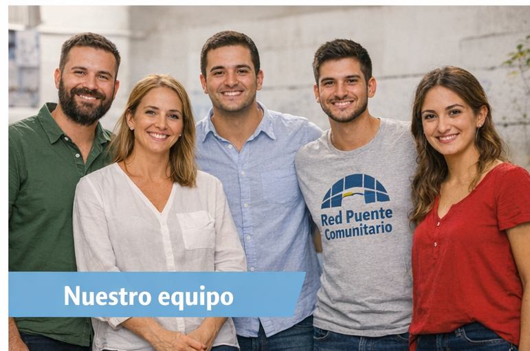
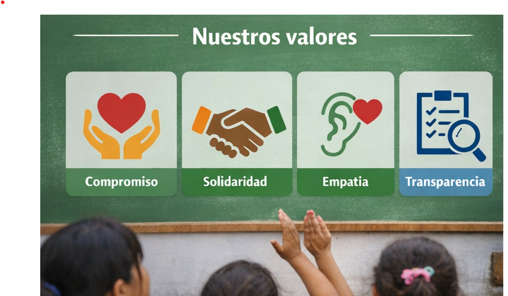

Marta Gonzales
Directora Ejecutiva
Conectando oportunidades

En Red Puente Comunitarios trabajamos para reducir las desigualdades sociales fortaleciendo el tejido comunitario. Somos una organización sin fines de lucro que conecta a personas, recursos y oportunidades con quienes más lo necesitan. Creemos que el cambio real ocurre cuando se construyen vínculos sólidos entre la comunidad, promoviendo la participación activa y el compromiso social.
Red Puente Comunitario nacio en 2028 a partir de un grupo de estudiantes universitarios que comenzaron brindando apoyo escolar en barrios vulnerables. Lo que empezo como encuentros informales en espacios comunitarios, crecio rapidamente gracias al compromiso de voluntarios y la confianza de las familias. Con el paso del tiempo, la organiazacion se consolido, ampliando sus areas de trabajo hacia la asistencia alimentaria y la inclusion digital, adaptandose a las necesidades reales de cada comunidad. Hoy seguimos credciendo, manteniendo el mismo espiritu: estar cerca, escuchar y acompañar.
Brindar herramientas, acompañamiento y oportunidades a personas en contextos vulnerables, promoviendo su desarrollo integral a través de la educación, la inclusión social y el fortalecimiento comunitario.

Trabajamos desde un enfoque integra, abornando distintas dimensiones de la vulnerabilidad:
Directora Ejecutiva
Coordinador de Proyectos
Responbles de Voluntarios